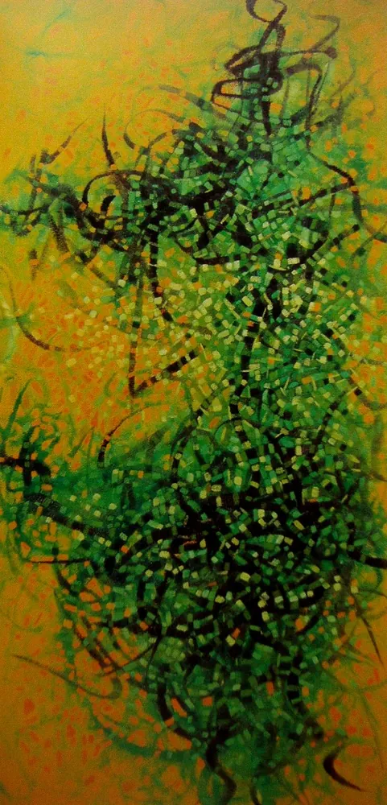
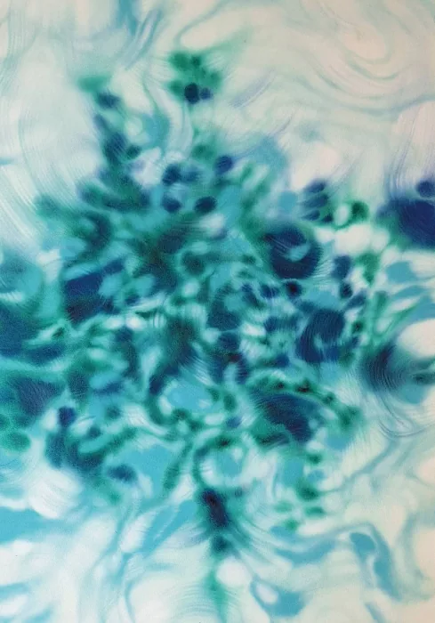

作品
1991–1995
情慾の思索Psyche & Eros


1996–1998
内景Interior Scene





このシリーズには、ほかにもお問い合わせいただける作品があります。お問い合わせ
1999
心象State of Heart


2000–2014
植相Realism (Zhi Xiang)


2007–2009
随行Take a Walk
歩みとともに／既知の探求の軌跡にはなく／歩みとともに／思考は流れをとどめ／歩みとともに／振り返ればすでに煙のように消え／私はこの瞬間に蒸発し／残された刻印の図騰／すべてであり／何ものでもない梁至青、2009年の制作自述


2010
流動Flowing


このシリーズには、ほかにもお問い合わせいただける作品があります。お問い合わせ
2010
雲・山・水Cloud, Mountain, Water


2012
千年の華Millennial Splendour


2017–2018
光変Guang Bian (Light Shift)
「感覚」とは、考え、息をつき、しばらく立ち止まる時間を経て、身体から沈殿してくる感情と認識である。今周刊 2018（広告企画、原文は確認中）


このシリーズには、ほかにもお問い合わせいただける作品があります。お問い合わせ
2023年から進行中
琉金光燦Ryukin (working title)

2024
偶発 abiogenesisAbiogenesis





情慾の思索 No.1 1991
情慾の思索 No.20 1994
情慾の思索 No.29
情慾の思索 No.30
情慾の思索 No.32
内景 No.3（三連作） 1996
内景 No.21
内景 No.23
内景 No.25
内景 No.27
内景 No.29
内景 No.32
内景 No.35
心象 No.13
心象 No.47
心象 No.98
バショウの葉 2000
バショウの葉 2001
クスノキ 2003
緑竹
ハナシュクシャ 2004
相思山
バショウ林
随行 No.36 2007–2009
随行 No.38 2007–2009
随行 No.33 2007–2009
随行 No.31 2007–2009
随行 No.32 2007–2009
随行 No.23 2007–2009
随行 No.24 2007–2009
流動 No.2 2010
流動 No.4 2010
流動 No.6 2010
流動 No.11 2010
流動 No.12 2010
流動 No.13 2010
流動 No.16 2010
流動 No.18 2010
雲 2010
山 2010
水 2010
白いバラ-1 2011
ピンクオレンジのバラ-1 2011
オリエンタルリリー 2011
洋紅葵百合
黄色いヒメユリ-2 2012
アマリリス-1 2012
千年の華-1 2012
千年の華-4 2012
光変 No.6 2017–2018
光変 No.8 2017–2018
光変 No.14 2017–2018
光変 No.18 2017–2018
光変 No.20 2017–2018
光変 No.24 2017–2018 売約済み
光変 No.28 2017–2018
光変 No.29 2017–2018
光変 No.33 2017–2018
光変 No.34 2017–2018
琉金光燦 No.01 2023 売約済み
偶発 No.1 2024
偶発 No.2 2024
偶発 No.3 2024
偶発 No.4 2024
偶発 No.5 2024
偶発 No.6 2024
偶発 No.7 2024
偶発 No.8 2024
偶発 No.9 2024
偶発 No.10 2024
偶発 No.11 2024
偶発 No.12 2024
偶発 No.13 2024
該当する作品はありません。